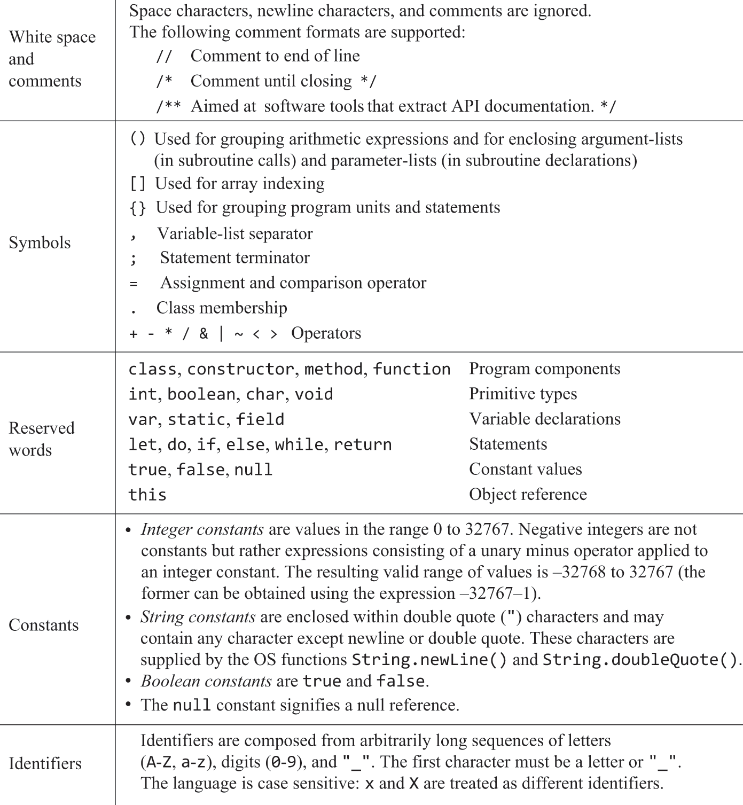
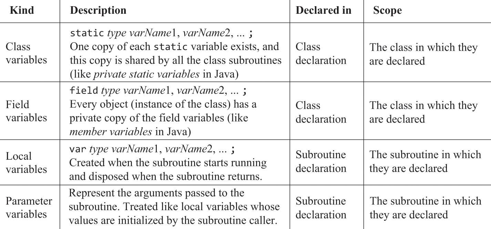

8.1 High Level Languages
Language Specification
- Jack is a high level object based programming language similar to C++ / Java
Syntactic Elements
- Jack programs are a sequence of tokens separated by whitespace
- Tokens can be symbols, reserved words, constants and identifiers

Program Structure
- Programs are a collection of classes stored in the same folder
- One class must be
Mainand this class must have a functionmain - Execution starts with the
Main.mainfunction - Basic programming unit is a
class- Each class exists in a separate class file
Class.jack - Classes start with an uppercase letter
- Each class exists in a separate class file

- A class declaration specifies a name which methods can be accessed
class.subroutine - Contains
fielddeclarations for object properties andstaticdeclarations - Then contains
subroutinesmethodsoperate on the current objectfunctionsoperate on the class abstraction itself, not relying on a unique objectconstructorscreate and return new objects of the class type

class SomeClass {
field int someField;
function void someFunction(int arg) {
// This is a function.
// It does NOT have access to someField.
do something();
}
method void someMethod(int arg) {
// This is a method.
// It has access to someField via the this pointer.
let someField = arg; // modifies the object's field
}
}
- Includes a
nameto be accessed by its classclass.name - Includes a type to indicate what is returned by the routine (
voidif no return)- Can be any primitive, abstract or standard class data type
- Constructor's return type must be of the class it belongs to
- Includes a parameter list of typed variables to be used as arguments
int x, boolean sign, Fraction g
- Constructors can be arbitrarily named, and there may exist multiple of them
- Usually called
new
- Usually called
- Contains a sequence of local variable declarations
varstatements and then statements to manipulate that data - Each subroutine ends with a
returnexpression- Must return variable of type defined in subroutine declaration
voidreturns nothingreturn;- Constructors return object itself
return this
Data Types
- Primitive types include
int, char, boolean - Standard class types included too
String, Array - Abstract data types can be created via classes and exist in the project folder
Primitive Types
int- two's complement 16 bit integerchar- unsigned 16 bit integerboolean-trueorfalseexpressed in 16 bits- Weakly typed - a value of any type can be assigned to a variable of any type without casting
Arrays
- Declared using standard OS class
Array - Elements accessed using
arr[i], index starting from 0 - 2D arrays are arrays of type array
- Declaration creates a reference,
newcreates the array properArray.new(arrayLength)
Strings
- Arrays of
chars - Contents of a
Stringobject accessed usingcharAt(index)
Object Types

Type Conversions
- Weakly typed - any variable can be assigned any value type
-
Compilers may check for any errors and perform the following assignments:
-
charscan be assignedintsand vice versa

intscan be assigned references to objects (interpreted as a memory address)

objectscan be assigned toArraysand vice versa

WTF?
Variables

static, localvariables must be initialised manuallyfieldvariables initialised by constructor (usually)parametervariables initialised to values of arguments passed by caller
Statements

Expressions
- One of the following
- A
constant - A
variablename in scope - can be any of the 4 types thisdenoting the current objectarr[index]denoting an element within an array- A
subroutinecall
- A
- Can be prefixed with:
-for arithmetic negation~for Boolean negation
- Can be combined using operators
+ - * /- integer arithmetic& |- BooleanAND / OR<>=- comparison
- Can be contained in parentheses
(expression)forBODMAS- Parentheses must be used, otherwise expressions are evaluated left to right
8 - 2 * 3
If evaluated from left to right without considering any other rules:
1. First, you'd subtract: 8−2=6
2. Then, you'd multiply: 6∗3=18
Subroutine Calls
- Must always use
()even if no arguments - Can call methods without implying
classNameif already within a subroutine of that class

Object Construction and Disposal
- Two stages
- A pointer to an object is declared
- Object's constructor is called with arguments to initialise
fieldvariables
- Constructed and assigned to variables using
let varName = className.constructur(args)
- Can deconstruct objects using
Memory.deAlloc(object)- Every class should include a
dispose()method that deallocates the object
- Every class should include a
Writing Jack Applications
Compilation
- All files comprising the program exist in the same directory
- Translates
.jackfiles into their corresponding.vmfiles - The program folder containing
.vmfiles can be loaded into the VM emulator- No need to bundle OS
vmfiles as it comes bundled within the VM emulator
- No need to bundle OS
Also, you may wonder why the Jack syntax includes clunky keywords like do and let, why every subroutine must end with a return statement, why the language does not enforce operator priority, and so on—you may add your favorite complaint to the list. All these somewhat tedious idiosyncrasies were introduced into Jack with one purpose: allowing the development of simple and minimal Jack compilers